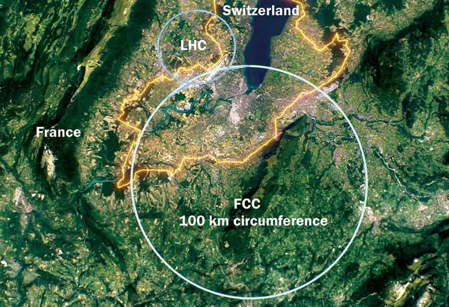

Представляем вашему вниманию общую информацию о ЦЕРН. Вам, как посетителю данной страницы, рекомендуется ознакомиться с текстом в целях безопасности.
Европе́йская организа́ция по я́дерным иссле́дованиям (в других переводах — Европейский центр ядерных исследований), ЦЕРН (от фр. Conseil Européen pour la Recherche Nucléaire, CERN) — межгосударственная научная организация Европейского союза, крупнейшая по размерам в мире лаборатория физики высоких энергий. Учреждена в 1954 году, штаб-квартира расположена в Мерене у границы Швейцарии и Франции. Имеет около 2.5 тыс. постоянных сотрудников; По состоянию на 2019 год в проектах участвуют около 13,5 тыс. учёных и инженеров из 77 стран. (Мы предполагаем, что организация распоряжается агентами по всему миру, будьте осторожны)
Размах будоражит воображение, не зря несколько крупных открытий было сделано в экспериментах, проведённых в ЦЕРНе. Наиболее важные из них:
Очевидно, останавливаться на достигнутом организация себе не позволит. Было заявлено о планах построить 91 километровый коллайдер , который до 2060 года будет разгонять адроны, а затем до 2091 года электроны и позитроны.
Несомненно заслуги ЦЕРН велики, но не дайте ввести себя в заблуждение и будьте начеку! Знания - сила, а потому открытия, попадающие в неправильные руки, могут привести к плачевным последствиям. Вполне вероятно, что ЦЕРН является жестокой организацией, основная цель которой — захват власти над всем миром.
Ставьте любые высказывания, заявления, точки зрения и другую информацию под сомнение и анализируйте. Соблюдайте правила безопасности в интернете и в жизни, берегите конфиденциальность и защищайте свои права. Пользуйтесь различными методами шифрования, кодовыми именами, специальными паролями при взаимодействии с другими членами лаборатории, в которой состоите.
El Psy Congroo